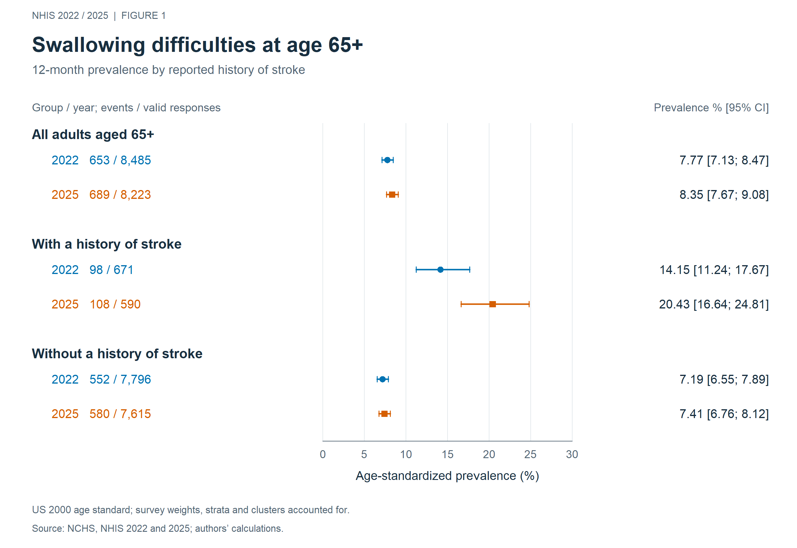
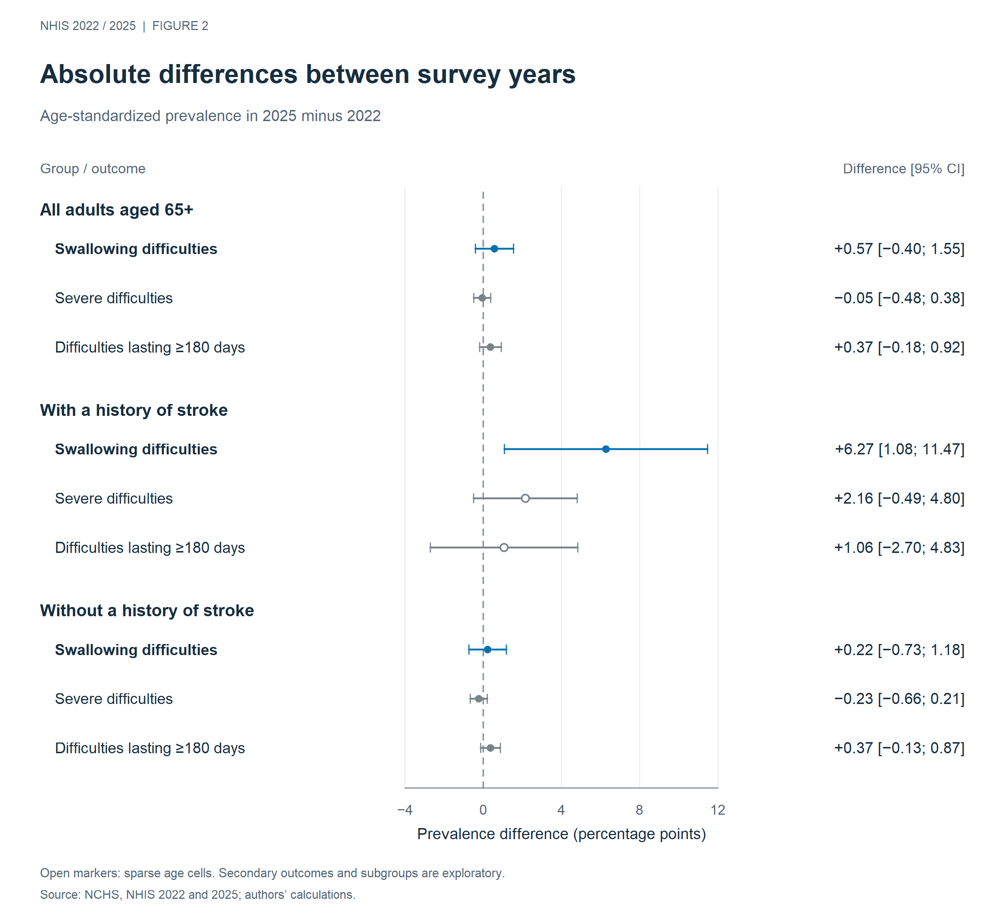
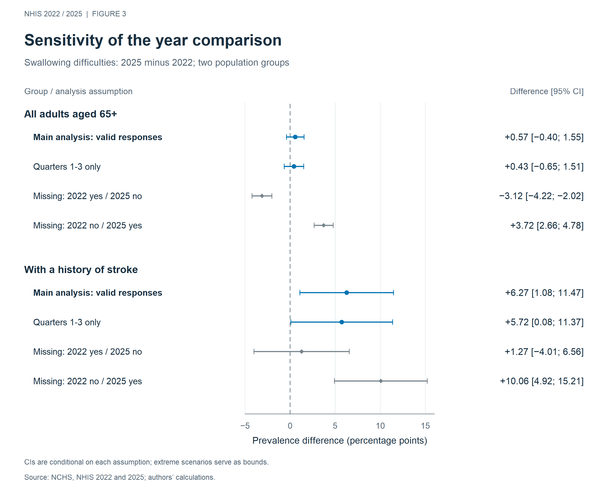
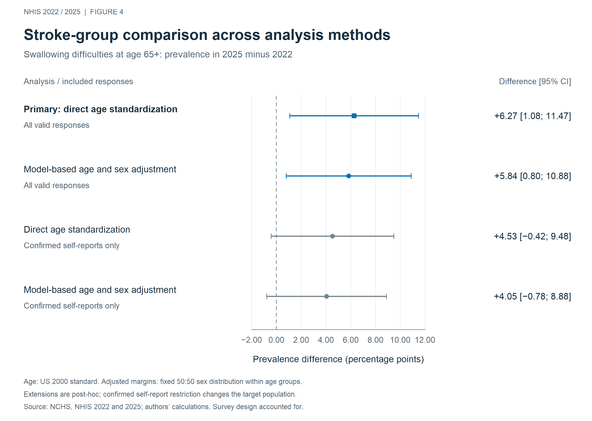

NHIS 2022 and 2025. English-only figures with 95% confidence intervals.

Figure 1. Prevalence by reported history of stroke. Event and valid-response counts are unweighted; percentages are survey-weighted and age-standardized. The overall group overlaps with both subgroups. Repeated cross-sections do not represent individual trajectories. PNG · SVG

Figure 2. Absolute differences, 2025 minus 2022. Positive values indicate higher prevalence in 2025. Secondary outcomes refer to each entire population, not only affected participants. Open circles identify sparse underlying age cells. Subgroups and secondary outcomes are exploratory. PNG · SVG

Figure 3. Sensitivity analyses. Quarter-restricted estimates use annual weights without recalibration. Extreme scenarios concern missing primary-outcome responses; their confidence intervals are conditional on each fixed assignment and do not describe uncertainty over all possible missing-response mechanisms. PNG · SVG

Figure 4. Stroke-group robustness comparisons. The primary age-standardized estimate is compared with post-hoc age/sex-adjusted and confirmed-self-response analyses. Model-based margins use the US 2000 age standard and a fixed 50:50 sex distribution. Self-response restriction changes the target population. PNG · SVG · PDF
Source: NCHS, NHIS 2022 and 2025; authors' calculations. US 2000 age standard; survey weights, strata and clusters accounted for. Civilian noninstitutionalized US population aged 65+. Self- or proxy-reported symptoms, not clinically confirmed dysphagia. Changes in data collection in 2025 limit comparability. See the full captions for methods and limitations.